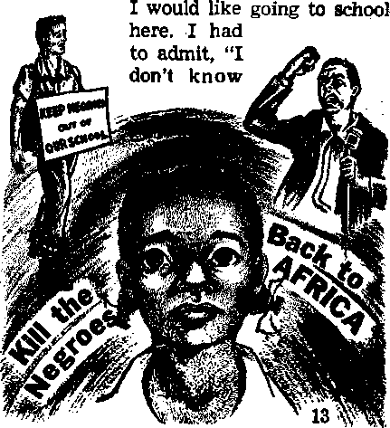

l*AOf TO PtfKSV
EXPOSING THE WEAK RELIGIOUS GIANT
America Still Likes Ike!
Integration—How It Feels
The Divine Name Restored
THE MISSION OF THIS JOURNAL
News sources that are able to keep you awake to the vital issues of. our timba must he unfettered by censorship and selfish interests. “Awake 1” has no tetters. It recognizes facts, faces facts, is free to publish facta. It is not bound by political ambitions or obligations; it Is unhampered by advertisers whose toes must not be broaden on; it is unprejudiced by traditional creeds. This journal keeps itself free that it may speak freely to you. But it does not abuse, its freedom. It maintains integrity to truth.
“Awake 1” uses the regular news channels, but is not dependent on then^ Its own correspondents are on all continents, in scores of nations. From the four corners of the earth their uncensored, on-the-scenes reports come to you through these columns. This journal’s viewpoint is not narrow, but is international. It is read in many nations, In many languages, by perBona of ail ages. Through its pages many fields of knowledge pass in review—government, commerce, religion, history, geography, science, social conditions, natural wonders—why, its cover' age is as broad as the earth and as high as the heavens.
“Awake I” pledges itself to righteous principles, to exposing hidden foes and subtle dangers, to championing freedom for all, to comforting mourners and strengthening those disheartened by the failures of a delinquent world, reflecting sure hope for the establishment of a righteous New World.
Get acquainted With “Awake!” Keep awake by reading “Awake!"
Pusushbo SairrsrwrHtr Br
WATCHTOWER BIBLE AND TRACT SOCIETY OF NEW Y’OftK. INC.
117 Adams Street, Brooklyn 1, New York, U. S. A. N. H. Knobs. President GsiNt Sun™, Secrvtory
Printing this Issue: 2,050,000
Odw lineaefM Ie whkh "Awikil" h. eatlhSM: SHtfMMtMr—Alrlkuns, Finnish, /resell, Anntir, ureeft, Holland l^h, Halim, Norwegian, Hpankb. Swtdlih,
MnWr—Daahh, ituanui, Portutuege, Ukrainian.
Tetri, suhwrlutlon rerea
Heu tre Mmlmonihly pHtiona
«e«lH. U.S., 117 Adams St., Brertlyn 1. N.T. *1 Antral la, 11 Bareslmd Hd., Strattintld, N.si.W. 8/* CmiIb, ISO Bridgelinii Are., Torocto 10. Oct. *1 Efland, 31 Craven Terrace. Ijmdori w. 2 t/.
M(« G.P.O. Box 30. Welllsstao. C. 1 th
South Afrha, Prirale Bit, ElnuMsiiein, T>1. tj-
Mrerttily UHI«M ent 1n« th* atom ratal.
Five tents a copy
HeeiHinw should be acai io oMIh k rrur cwia-IU tn compliance with irgutatlocs to Guarantee ante ttaUrerr rf moder. BenrilUneea ar, accepted at Brooklyn horn' cpunlrks where Qu office la located. By Inifftutlsnal money tinier only. Subuslptltm rate, la different countris ar, here ata tret In local ctmrencr Mallee of eaelrallea (with renewal hlanlc) la sent at lead, two insure before aubsiilollon expires. Ctieafi ef liitrea when wot u> our office may tn ertneetert efferttre wltlrhr one nmrrih. Sew. your old as veil a, new address.
Entered u ncond-dMa matter at Brenklrn, N.T.
Printed la U.S.A,
CONTENTS
Exposing the Weak Religious Giant
What New Year’s Day Do You Keep? 21
Greenland—An Old Real Estate Trick 24
“Your Word Is Truth’'
Jehovah’s Witnesses Preach in Ail the Earth—-Panama
SOME people look at the title of this magazine and indignantly reply: Tm awake; why offer it to me?” But are they really awake? Are you? Many people are awake to the latest neighborhood gossip or to the newspapers’ latest scandals, but are you awake to the urgency of our times and to the fulfillment of vita! prophecies?
With so many sources of conflicting information today, it is difficult to keep from being misled. How can you keep from that? By having reliable facts backed up by the Supreme Creator, the Sovereign of the universe, Jehovah God. Because it accepts his Word this magazine can help you stay awake today.
It is true that there is more knowledge now than ever before, but Paul spoke of those who would be “always learning and yet never able to come to an accurate knowledge of truth.” Certainly that describes much of the world today. Who can explain the reason for present difficulties? Who can show the way out? Only those who are willing to put aside their own learning and accept God’s wisdom can do so. Are you willing to do it? Then Awake! will be pleased to help.—2 Timothy 3:7, New World Trans.
Why is this alertness so important now? Because we are living when Bible prophecies are being fulfilled. Few people really are awake to this fact. Yet the Scriptures foretold World War I, man’s failure to bring peace, the failure of the League of Nations, its reappearance as the United Nations, and even its eventual end. They foretold the increasing persecution of true Christians, the falling away from right doctrine that ’ is evident today, and the preaching of the good news of God’s kingdom earth-wide. They said that in one generation this would happen. And, amazingly, it has happened in our generation!
Are you awake to these facts? They are recorded at Matthew 24, and the League of Nations is described under the symbol of a beast at Revelation 17:8. They are things that God has said. Your religious leaders never taught them to you? Then, indeed, it is time to wake up and find out why! In doing this you will also learn the happy fact that real peace is near, and how it will come.
It is surprising, but true, that not everyone likes what the Bible says for today. Some people do not like the way the Bible differs from much of what is taught in today’s religion. And instead of correcting religion, they merely dislike the Bible’s statements. But for people who want facts,
Awake! offers Its services. Its articles are true. It faces facts. It puts reliability ahead of popularity. But, then, so did Jesus and his disciples! If you are like the first-century Christians, and want facts even when they hurt, then Awake! is for you.
It hopes to stir you to deeper thought, to personal investigation, to intelligent discussion, and, yes, to a more wide-awake view of the reasons for today’s troubled conditions and of their outcome, as foretold in God’s Word, the Bible.
SUPPOSE you had to walk alone at night along a dark street on which a number of pedestrians had recently been attacked. You, no doubt, would proceed with due caution, would you not? Of course, if you had at your side a giant nine feet three inches tall, as was the Russian giant exhibited in London back in 1905, you most likely would feel quite safe.
But would you truly have reason to feel safe? Not necessarily. Why not? Because giant in size does not always mean giant in strength. In fact, more often than not, physical giants do not have proportionate strength. We are also told that they are often mentally weak and lack courage; are easily led morally and have poor control over their members, being clumsy, irritable and moody. They also have a tendency to advertise themselves as being larger than they actually are.
All of this is in striking contrast with dwarfs and midgets, who seem to be compensated by exceptional mental and physical health. History records a curious assembly of giants and dwarfs that a certain seventeenth-century empress of Austria brought together from all parts of Germany. The caretakers had worried about the fate of the dwarfs among the giants, but instead of the giants’ harming the dwarfs the dwarfs so annoyed the giants that the giants complained with tears in their eyes, and so sentinels had to be brought to protect the big creatures.
Why should this have been the case? Because giants, as a rule, are freaks suffering from h disease known as gigantism, caused by overactivity of the pituitary or growth gland, frequently induced by a tiny tumor. Because this exaggerated activity is not uniform the bones may grow very
large, but not the muscles. Usually the heart is not equal to the added strain and so the pulse is either very fast or extremely feeble and slow. Frequently giants are impotent, short-lived and succumb to diabetes.
Among the world’s religious giants is the Roman Catholic organization, which claims to be the largest of them all. According to the Roman Catholic Register of Denver, Colorado, July 4, 1954, this giant has a membership of 472 million, or about one fifth of earth’s population. Since he also claims to be the one true church Christ established, it would seem that those men of good will who have sought safety in the company of this giant are very wise. But are they? Not if that giant is not what he seems to be. What are the facts?
Size Exaggerated
The facts show that this religious giant has seven glaring weaknesses, being very much like the weak physical giants. And should anyone feel offended at the facts herein presented let him note that it would be far more logical to take offense at the ones responsible for the facts rather than at the ones bringing the facts to his attention.
As a first weakness we note that this giant has greatly exaggerated his size. Thus, according to the Allentown, Pennsylvania, Evening Chronicle, March 3, 1952, the much vaunted "thousand churches of •Rome” are only 643, and of these 501 are in operation, the rest being closed. And inasmuch as this giant counts as members all infants as soon as they are “christened,” instead of counting only those "confirmed,” he exaggerates his size at least 15 percent.
Then again, according to the New York Times, June 19, 1955, the Roman Catholic Canon CwJe YwAds that anyone “christened” a Catholic remains one unless he is officially banned from his church by the proper ecclesiastical authorities. That this means still further exaggeration is apparent from the results, of a poll made by a Catholic chaplain during World War n, as reported in the Catholic magazine America, January 29, 1944.
This chaplain found that of 164 Catholics that had entered his hospital sixteen had invalid marriages; eight nominally Catholic would have absolutely nothing to do with him; twenty-six had not been to mass for one and a half to eighteen years and four had not even made their first communion. This would indicate that of the grown male Catholic population in the United States, one third were not even Catholics nominally. This religious giant greatly exaggerates his size.
Weakness of Mind and Body
Cas. aJsa ■m&I vA rriigiuus 'grarft that, like most physical giants, he is mentally weak, easily led, and that he has more bone than muscle, in that his members are also weak ? It can.
Proof of his mental weakness can be seen in his being an imitator rather than a leader. This is a very serious weakness, for it means that what he will do depends upon what others do. Thus, for example, The Catholic Encyclopedia states that it was because Europe was being flooded by Protestant Bibles in the common tongue that the Catholic Church found it necessary to produce the Douay Bible in 1610. It failed to grasp the people’s need for God’s Word.
The same is true today, 350 years later. Thus the Christian Century, October 26, 1955, quoted Chilean priest Munoz as saying: "To defend ourselves from Protestantism ... we should print around 500,000 Bibles to be sold at a very low price. This TTfost ’ue ftune soon." Mier lour centuries this giant wakes up to the Chileans’ urgent need for God’s Word!
With the mind’s giving such evidence of weakness, is it any wonder, then, that the body, the muscles, the members, are likewise found to be very weak? Our Sunday Visitor, April 11, 1954, tells of only 28 percent of Catholics having "ever done anything to win a convert to their religion.” When a group of Mexicans in Texas, most of whom were theoretically Catholics, Were asked if they had ever heard of the Gospel, ninety percent answered No. —Time, October 31, 1955.
Could we imagine Jesus and his apostles exaggerating the fruits of their labors? Or imitating their enemies ? Or could we think that 90 percent of the early Christians had never heard of the good news of God’s kingdom? Or that most of them had never seen any of the scrolls of the Hebrew Scriptures, when Luke tells us that the Beroeans searched the Scriptures daily? (Acts 17:11) Is not all this further proof of the weakness of this religious giant?
Lacking Courage a Third Weakness
Do the facts show that this religious giant is also lacking in courage? They do. Thus, when leading American Catholics petitioned the pope to excommunicate Hitler the pope ignored their petition even though Hitler was proceeding from one diabolical crime to another.
Instead of excommunicating murderous dictators, this giant made concordats with them, pledging them support in return for special favors. Thus by a concordat signed between the Vatican and Spain in August, 1953, the political chief has the final say as to who will be* appointed a Catholic bishop in Spain. In return only the Catholic Church has full religious freedom.
Since their head is so ready to compromise, is it any wonder that the Catholic layman behind the Iron Curtain likewise readily compromises?'It is therefore not surprising to note the words of a Catholic columnist, as published in a leading newspaper of Guatemala City, Nuestro Diorio, February 16, 1956: "We Catholics lack integrity, The courage to face the enemy is totally lacking in us. We are not capable of defending our religion . .. because of a faint-hearted spirit.”
Easily Led Morally
A fourth common weakness of giants, as we have noted, is that they are easily led morally. Does this also apply to the world's largest religious giant? It does. The Catholic Encyclopedia has the following to say regarding the respective popes: Pope John XII of the tenth century “was a coarse and immoral man, whose life was such that the Lateral) was spoken of as a brothel and the moral corruption of Rome became the subject of general odium,” Of Benedict IX of the eleventh century we read, again in The Catholic Encyclopedia, that he was “a disgrace to the Chair of St. Peter.” And of Leo X, who lived when the Reformation began, it is said that he had an “insatiable love of pleasure” and that he "gave himself up unrestrainedly to amusements,” even attending obscene plays.
And according to A Complete History of the Popes of Rome, by Catholic historian De Cormenin, Pope Hadrian VI, who followed Leo X, in a letter to the Diet of Nuremberg bemoaned "the corruption of the morals of the Roman Pontiffs,” and said that the contagion had spread from the pontiffs to the prelates to the monks, “so that now it would be difficult to find a single priest who was exempt from simony, robbery, adultery and sodomy.” In fact, down to the present century, the morals of the Roman clergy have been a scandal time and again in Latin-American lands.
Further, note the answer of the Homiletic and Pastoral Review, January, 1948, to a priest’s question: “Would it be a violation of legal justice for a medical doctor not to include all his income in his tax returns?” “No, it would not be a Violation of legal justice. Since income tax rates are high, some [Catholic] moralists teach that a person who conceals a third or a fourth of the real value of taxable property is not guilty of a legal injustice.”
How different from all this was the sterling honesty preached and practiced by Jesus and his apostles! They were not influenced by the moral tenor of the times but were lights, showing men what was right and what was wrong. Surely in this respect the religious giant also shows himself extremely weak and not the church established by Christ.
Lacking in Control of Members
A fifth weakness of giants is their inability to exercise self-control; they are often clumsy, irritable and despondent. Would this also be true of the religious giant here being considered? Let us see. Archbishop Kenrick of St. Louis, one of the some 765 prelates in attendance at the Vatican Council of 1870, which declared the pope infallible, when he spoke ex cathedra, said regarding this council that it “was turned into a theological arena, the partisans of opposite opinions exchanging blows back and forth with the hot temper that is more common in theologians than in bishops though not becoming in either.” And one third of those who had been called absented themselves from the final vote, the dogma being passed by a vote of 533 to 2. x
And as for the laity, an Irish historian and biographer writing in Life magazine, March 16, 1953, reported that in Ireland only 25 percent of the men marry under thirty-four years, in spite of all the preaching by the church that the Irish should marry and raise large families. The population of Ireland keeps on growing smaller and smaller.
And the New York Times, October 11, 1954, told of 5,000 pilgrims from Holland, Austria, Switzerland and Geimany flocking to a spurious shrine in Germany, in spite of the threat of excommunication. In New Orleans the local archbishop early in 1956 had ordered racial integration, only to postpone it at least a year because of the opposition by his flock.
Surely this lack of control of his members is another very serious weakness of the religious giant. To use another analogy, of what good is a large army if so many of its officers and soldiers refuse to obey orders?
Unable to Defend Self
We have seen that in one instance an assembly of giants begged for protection from dwarfs; and so, likewise, we find this world’s largest religious giant unable to protect himself from his opponents, even though they be dwarfs.
Unable to protect himself, he enlists the arbitrary use of secular power. Thus, although Spain is 99.9-percent Catholic, it is necessary for the state to protect that 99.9 percent by discriminating against the .1 of one percent that are tiny dwarfs by comparison. And in Quebec, Canada, a Catholic premier not Long ago had a law passed making the activity of Jehovah’s witnesses illegal, although the Catholics outnumber the witnesses some 3,000 to one. A giant 3,000 times as large as the dwarf and yet seeking illegally to restrain the dwarf!
A further proof of the inability of this giant to protect himself is his resorting to such foul means as murder, mob action and boycott, even as a boxer would rain foul blows upon his opponent if lacking in skill or strength. Yes, by resorting to any and all such tactics this religious giant is cravenly admitting his weakness: the weakness of being unable to combat ideas with ideas, logic with logic and Scripture with Scripture. Early Christians used only the “sword of the spirit,” God’s Word; no carnal weapons.
Spiritually Impotent
The seventh interesting parallel between the physical and religious giants relates to the impotence of the former, who are unable to have offspring. In this respect such giants may be said to be like certain religious leaders Jesus mentioned who traversed land and sea to make one convert, who, when made, was worse off than he had been before. Can this charge also be laid to the world's.largest religious giant? It can.
A classic example is Mexico. Thus a Catholic writer of the times tells of the difference in the Mexican Indians that the coming of the Spaniards brought about. “If formerly the Indians committed wrong they did so secretly, but now they have learned not only to do it without shame but even boastingly. Formerly the Indians dared not to steal; now they have become bandits. Before the Spaniards came to the villages, the houses were without doors, nor was there any fear of losing anything though all should go away to church. Now, not even the doors and locks are sufficient protection.”—Quoted in Religious Aspects 0/ the Conquest of Mexico, Professor Braden, Northwestern University, Evanston, Illinois.
And coming close to the present day, the late American Catholic Bishop Noll once said: “Nearly all the evils of society prevail most where we Catholics live. ... In areas where the population is 80 percent Protestant, the family life is most wholesome, and the divorce rate is low." And this is in keeping with other damaging facts, such as the prevalence of licensed prostitution In Roman Catholic lands and the high percentage of illegitimate births, accounting for 20 to 75 percent of all births in Central and South American lands, all of which are predominantly Roman Catholic. Surely, therefore, so far as Christian fruitage is concerned, this religious giant is lamentably weak, impotent in fact!
In view of all the foregoing it might well be asked, What accounts for this religious organization’s being so large and yet so weak? Among the reasons that might be given is the stressing of quantity and size instead of quality and strength. Another reason is the appealing to and feeding of the emotions instead of appealing to and feeding the reasoning faculties. An especially vital factor is the stress on the fear of purgatory and hell as a motivating force instead of stressing love of God and love of one’s fellow man. And, doubtless, most important of all reasons for this weakness is the failure to study and to teach God’s Word and to practice its precepts.
From these seven weaknesses and their obvious causes it is very apparent that this religious giant could not be the church that Christ established and that it is foolish for men of good will to look to it for protection. So, men of good will, separate yourselves from this pitifully weak religious giantlike organization. Study God’s Word with those who are following the example of the early Christians and who are bringing these facts to your attention. Learn of all the blessings Jehovah has in store for those who love him with their whole heart, mind, soul and strength and who love their neighbors as themselves: endless life in God’s paradisaic new world. True, the numbers of this group of earnest Christian witnesses of Jehovah may seem small, even dwarflike, but you need not fear, for “if God is for us, who can be against us?”—Romans 8:31, New World Trans., margin.
Adlai Stevenson, the Democratic party’s candidate for president of the United States, was limited in the attack he could make on the
How the U.S- presidential campaign progressed, why it went the way W did, and what it means far the future.
★★★★★★★★★★★★★★★★★★
Republican candidate, Dwight D. Eisenhower. Adlai knew that the people liked Ike, yet his job was to convince them that Ike and his Republican administration should be replaced by a Democratic one.
This was not an easy job.
Stevenson had already been soundly defeated by President Eisenhower in the 1952 campaign. It was obvious that a personal attack on the popular president would not be successful. Also, the Republican “peace and prosperity” slogan looked good. How would Adlai go about trying to overcome these obstacles and win the election?
He had to make his attack on the vice-presidential candidate, on Ike’s health and on the policies of Eisenhower’s assistants and administration—but not on the integrity of the popular president himself.
The theme that Mr. Stevenson hit again and again was that Mr. Eisenhower had been “a parttime” president who “is not master in his own house.” Stevenson bucked the Republicans’ “peace and prosperity” slogan with the contention that peace was not so sure nor prosperity so evident as the Republicans claimed. Seeking a good peace issue, like Ike’s I-will-go-to-Ko-rea talk in 1952, Stevenson said the hydrogen bomb tests should be ended, and that the draft might “be ended at the earliest possible moment consistent with national safety.”
The attack on the president’s health seemed to lose much of its punch in view of Eisenhower’s appearance of glowing good health during the campaign. The proposals regarding the hydrogen bomb generated considerable talk, but little real national enthusiasm, since most people seemed to think this was a matter for the experts and not one they could decide individually. The proposal regarding the draft left Stevenson open to the charge of advocating weaker national defense. The White House called it “loose talk ... hurtful to America’s security interests.” None of these issues really seemed strong enough to remove the Republican president from his position of national leadership.
Peace and Civil Rights
When peace collapsed in the Middle East and in Hungary, Stevenson called on all Democratic candidates to join him in “hammering home the lessons of the Middle Eastern debacle,” which he blamed on “the ill-considered and mistaken policies of the administration,” But actually the worsening world situation strengthened the president, not Mr. Stevenson. The administration’s efforts for a cease-fire in EJgypt dramatized Eisenhower’s peacemaker role, and many voters seemed to think that if war did come the experienced general would be the best man to see the nation through.
Both the Democrats and the Republicans went lightly on the politically delicate civil rights question. On one occasion, though, in Little Rock, Arkansas, Stevenson came out squarely in support of the Supreme Court’s school integration decision. There was a moment of tense silence, then strong applause. Yet the Republicans seem to have benefited most from the civil rights issue. The fact that the Supreme Court ruling on desegregation came during a Republican administration helped prompt a heavy Negro vote for Eisenhower, and therefore away from Stevenson and the Democrats.
Stevenson labored endlessly to perfect his speeches. He lowered his tone, campaigned harder and tried to get closer to the people than he had done in 1952.
Meanwhile, Stevenson’s running mate, Senator Kefauver, was in a popularity contest of his own. He made the campaignings ist campaign in all U.S. history! He traveled 54,000 miles, gave 450 speeches in 250 places and shook an estimated 100,000 hands! If that hand-shaking figure sounds astronomical, it is dwarfed by his associates’ very questionable claim that they counted him shake 5,595 hands in one hour at a Flint, Michigan, factory gate!
Despite all the Democrats could do, Eisenhower was far ahead in the popularity campaign. Almost every public opinion poll put him in the lead. The Saturday Evening Post said: “It’s never ‘time for a change’ unless what you’ve got is pretty bad and what you’re likely to get from a change promises to be a lot better.”
Apparently the people did not think that what they had was very bad or that the change would be much better.
The Windup
In the campaign’s windup Stevenson said the crisis in world affairs had stemmed from President Eisenhower’s “part-time conduct” in office. He asked whether the nation was prepared to accept Richard M. Nixon to guard the hydrogen bomb, to represent America before the world, and to serve as Commander in Chief of the armed forces. He said: “Every piece of scientific evidence we have, every lesson of history and experience, indicates that a Republican victory tomorrow would mean that Richard M. Nixon would probably be President of this country within the next four years.”
The Republicans took a different tack. They ended their campaign with an hourlong election-eve television program on which Nixon said the people of the United States are “getting the kind of government they want,” an honest government under which they can make a good living, which provides security and can keep the peace. He asked that Eisenhower be given the chance to finish what he h$d started.
The Landslide
Apparently the people agreed. They gave Dwight D„ Eisenhower a resounding vote of confidence, cutting across party lines, voting habits and long-standing political traditions. Eisenhower took the entire northeast, captured Midwest farm lands, shattered Democratic hopes on the Pacific Coast and cracked the solid South even deeper than he had done in 1952. Even Louisiana, Democratic since 1876, and not given a second glance by political observers, voted for him!
Strongly Democratic Jersey City went Republican for the first time in thirty-six years. Democratic Chicago, and even Montgomery, Alabama, the birthplace of the Confederacy, voted for him—the first time a Republican has won an election there since the reconstruction that followed the Civil War. The southern states of Kentucky, West Virginia, Virginia and even Kefauver’s home state of Tennessee chose Ike. A total of forty-one of the forty-eight states voted to return him to the presidency /or another four-year term.
Only in the Midwestern farm states did Eisenhower lag behind his 1952 victory, but he still won each of those states except Missouri. Despite the Democrats’ strong appeal for the farm vote, many farm areas turned toward Eisenhower rather than away from him. Peace was the dominant theme, and in the glow of the Eisenhower personality most of the other issues melted.
Twenty-two minutes alter the New York polls closed the New York Daily Mirror went to press with the headline: “Ike Wins!” When only a fifth of the vote had been counted the cautious New York Times proclaimed: “Eisenhower Wins in a Sweep.” An hour and a half after the first results came in Stevenson was working on his concession speech, though, typically, he polished and rewrote it until after midnight.
In all, Eisenhower received thirty-six million votes to Stevenann’s, twftwty-sxx. million, making the figure 58 percent for Eisenhower, 42 for Stevenson. The thirty-six million votes Eisenhower received gave him the greatest popular vote in United States’ history and the second-greatest plurality as well.
Democrats Take Congress
But despite Eisenhower’s personal victory, he failed to carry his party into power Since 1848 no president had failed to carry with him at least one house of Congress. But in 1956 the people chose a Republican president and a Democratic congress, Eisenhower, though one of the strongest political figures in United States’ history, had not successfully convinced the people that he had made the party over into his own image. As a result, he must deal with a Congress organized by the opposition.
It is argued that a Democratic congress and. a. mmiA Vrve’m
peace. Under normal condition^ this may be true, but this time it may not be as important as both parties have tried to make it seem. The differences between Elsenhower Republicanism and the moderate Democrats are narrow, and, generally speaking, Eisenhower had less trouble with the Democratic-controlled 84th Congress than with the Republican-controlled 83rd. Now that his prestige is at a new peak, he may be able to do even better with the 85fh.
However, there is another difficulty. The President’s own party is well aware of the fact that the Constitution forbids him from running for a thir(i term. This being true, Republicans who aspire to succeed him may soon be expected to start exerting themselves. Some of these aspirants will be right-wing Republicans who disagree with many of Eisenhower’s policies. Whether the president’s desire to have consider-afcj>e ■say in Yne nomination ot his successor will keep these members of his party in line is doubtful, in view of their past opposition to his policies.
Thus, as the 1956 election fades into history, the politicians of both parties already are looking to I960 and beyond. After the campaign was over Senator Kefauver was asked why he was shaking hands with American Airlines personnel. He replied: “I have to keep in practice.”
A lot of practicing can be expected between now and I960.
/j/iT&A dressinK I went to breakfast. W^r MZv For my little brother Timmy, who is three, it was just another day. For Cathy, who is twelve, it promised to be a day of fun. Cathy was entering her last year at the all-Negro grade school. Bpt for me it was something new. Something to dread. The time had come when I, along with a few other boys and girls, was to enter an all-white school.
Integration.
I had only read about it when it happened in other Southern States. Now integration had come to our state. Our town. In other places where there was to be integration there had been violence.
Mother, at breakfast, was just as nervous as-1 was. "I don’t want anything to happen to Peggy," Mother said.
“I don’t want anything to happen to Peggy either,” Father said. “I don’t want anything to happen to any of the-children. Why should anything happen? This is a peaceful town. We never had any trouble in this town. Never had a bit of trouble.”
“But that man has been around," Mother could not forget. "He has called from door to door among the white people.” Then, too, there was a booklet some people had.
“What a horrid booklet!" Cathy remembered. I remembered too. On the cover it showed three Negro men with their arms around two white girls. One of the Negroes was kissing one of the girls. "Mongrel” was the name of the booklet.
“Why should that man stir up any trouble?” Father did not believe he could stir up the people. “I pay taxes in this county. I’m a citizen. Why shouldn’t my children go to the school nearest home? Why should they have to go a long way off?”
I said: "Margaret Steiner said that that man told her parents that if we Negroes went to the white school they’d better not let their children inix with us, or they might want to marry us.”
Father scowled hard over the top of his coffee cup. “You are not going to school to get a husband. You are going to get an education,"
Breakfast passed very quickly. Then it was time to go. Father and some other of the neighbor men drove us down to school. Mother rode along. Timmy came too. Timmy had heard us talk about the segregationist doing bad things. He wanted to see what the "bad man” would do.
The First Day
No one talked as we drove near the school. We could see white people standing around. Not all of them were students. They were waiting, just waiting, “I’m scared,” I confessed. “I wish those people wouldn’t look at us so hard.”
The other students in our car were scared too. Mother hugged Timmy very tight. She tried not to look to the right or to the left. Father encouraged us to show that we had grits, as he said.
Father brought the car to a stop at the front entrance. There were white people standing all around, Alvina, my closest neighbor, who is fifteen, looked at me and I looked at her. “Now keep your chin up,” Father encouraged. “Remember that none of you children were forced to do this. This is your own choosing. Just show them that you’ve got grits.”
My knees felt shaky, but we got out of the car. We walked down the sidewalk a half-dozen steps. I got more nervous with each step. I could feel the tension mounting. Somebody shouted. Then it seemed that everyt^dy was shouting. Several young boys, maybe ten or eleven years old, walked up and down the sidewalk shouting: “We don’t want integrated schools. Go home, niggers. No niggers allowed. Go home, coons.” Cars began to drive past the school with signs on them saying things like that—“Open season on coons,” "Go back to Africa.” I was in the lead. One of the small boys walked up and rudely put one of the signs in my face.
We began to walk up the steps. My best friend, Sue, who is sixteen, walked up beside me. We walked together. When we got about halfway up the steps, the people became suddenly quiet. .They looked at us as if we were strange animals. I thought we would never reach the top of the steps. How I wanted to turn and run! How I wanted to run back to the car and go home!
But once inside the front door I felt a little better. We were all glad to get in. Ricky, who is fourteen, said: “Wow, I’m glad that’s over!”
The students in here seemed friendlier. Some of them smiled at us. At least no one said any harsh words.
We walked up the hall and stopped near the office, hardly knowing what to do. I had my back turned toward the crowded hall. Suddenly someone was pulling my hair. I think it was a girl. Just then the bell rang and everybody tore away.
We could go to our first class now. Was I glad to sit down! And it was a very wonderful sight to see Tony, who is sixteen and a senior, going to class with me.
Tony and I sat in seats across from each other. We began to talk about how the people had acted. We wondered if they were going to do the same thing every day. The white students were coming into the room. Some of them came over to where we were sitting. They introduced themselves and asked us our names. They asked us how old we were, what grades we were in and what sort of things we were interested in, such as class subjects. One of the girls, named Betty, asked me how I thought
yet.” Betty said: 'Tm sorry things have to be this way.”
Then there were reporters in the room. When the teacher ehtered a film was made. We finally settled down and the teacher called the roll. After that she stood up and talked to us. She told us, meaning the white students mostly, to stay out of the crowd, because that made it look worse. She told Tony and me how sorry she was about the •way the people were acting. She hoped that everything would change in a few days. I knew immediately that I was going to like her.
Except for a few smart words that I heard once in a while, the rest of the day went smoothly. In every class the teachers treated me without the least bit of prejudice. I kept meeting more and more nice students. But some of the students would not look at me, as if to say, “In a few days you won’t be here.”
But as the day wore to its end that fear Thad felt returned to gnaw at my nerves. The three-thirty bell rang. I looked everywhere frantically for one of the other Negro students. But the halls were solid rivers of white faces. I would have to go out and face the crowd alone.
How I did it I’ll never know. As soon as I stepped out the door they yelled: “Here they come!” I walked down the steps not looking at anyone. Our parents were waiting, but they had to wait all the way at the top of the hill.
Somehow we made it through the ugly, jeering faces. When we were all accounted for we started home. There was much talk now. Each student was trying to tell his parents what had happened. I told Father and Mother I didn't believe I could stand a second day of this. That was the way the other students felt.
The Second Day
I awoke the second morning feeling the same way I had the first, only worse. Now I knew what it was like for Integration to come to our town. But I went on anyway. Almost all the other Negro students did too.
This day there were more people, more signs, and a new name. A new segregationist was in town. I, had heard the name before. The Sunday before school started there had been talk of this man. He was really here now. He was going to do all he could to get us out of the school. I heard most of the rumors from the students in school. I guess I heard so much that day that I could write a whole book. In every classroom the students were talking about him. Their opinions were not very much in his favor. Some said they thought he was ignorant. Some wished he would go home and leave us alone. Some said they thought the people who were following him were just plain silly. Many were surprised to see their friends on the outside taking part in the activity. Everyone that wanted it to turn out all right had hoped the situation would get better. But now that the man with the soft but powerful voice was here, it was bound to grow worse.
The more they talked about it, the worse I felt. I had never known so much fear. Just to think of trying to go on with it made me shiver. There was no use trying to concentrate on my lessons. All I could think of was that angry mob outside, waiting and waiting for the three-thirty bell. It was strange. It was like some bad dream. All of a sudden these people, who had pretended to be our friends, were really in their hearts full of hatred and deceit.
The Third Day and Violence
The third day I shall never forget. It was the day the fire really started to bum. In the early morning we received a phone call. The police told us that there were a good many people standing around the school, but if we wanted to, to come to school anyway. Our parents were really undecided. I didn’t think I could stand another day of it, for sure. But finally we decided to go.
When we drove down to the school there were people everywhere. Never had I seen so many people in this small town. Not even when there was a parade. As soon as they saw our cars coming down the hill they shouted, “Here they come!” Some shouted to the reporters, “Get their pictures!” I was so scared I gripped my jaws as hard as I could to fight back the tears. I wanted to go home. I told my father and mother so.
Father circled the school. We saw one of the town officials. Father asked him whether or not he thought we should go in. Mr. Thomas assured us that we should go in, and not give up. He said we could enter a side door,
I liked that very much—I mean going in at the side door. Anything just to get away from those cruel and vicious-looking people.
Inside there was a great decrease in attendance, which was made up for by the big increase on the outside. There were girls picketing now. They were carrying signs against the principal, saying, “Out with the niggers or out with the principal.” He, the principal, was going through an awful lot. He had been wonderful in everything. His kindness encouraged us a lot.
Nothing went right that day. Negro passers-by were attacked in the streets. A white man tripped a Negro woman, and then a white woman beat her with a bottle. It was not safe for any Negro to walk anywhere in town.
Coming back from lunch one of the Negro students was attacked by a white woman. When he tried to protect himself one of the young boys who should have been in school jumped in the fight and started a terrific one. Both boys were taken to jail. Later on a Negro girl was beaten in front of the School. There was another fight, and more confusion. Things were getting worse every minute. I was afraid even to walk down the hall. Newspapermen were everywhere. They were interviewing us, taking pictures, making television films, the whole school was crawling alive with them. Never had my mind been in such a whirl. My head ached. I felt weak and sick all the way througn.
About an hour before school was out the clerk came around to all the rooms and told us Negro students that we were to be taken home. We were met by the sheriff. He said that the crowd was getting very angry. There was no telling what they might try to do. The sheriff herded us together and loaded us into squad cars. As we passed by the crowd shouted: “You’d better take the niggers home before we kill them.” They would have really loved to kill us.
Bate and Fear
All my life I had been taught to love everyone, no matter what race he belonged to. Every man was created equal. I believed this as a teaching of the Bible. But I could see, in a way I shall never forget, that these people and the ones everywhere like them had other ideas. They still wanted to think of our race as slaves. They were trying to keep us that way. With a leader with as much force as the segregationist had to make them madder, they would surely win this battle.
As night neared on the third day, the town was filled with people. The segregationist was going to speak. The quiet of the night was suddenly broken by loud shouts and cheering. From where we lived above the town we knew the man was speaking. The noise went on until a late hour.
And the next day there were greater crowds than ever on the outside and fewer
students inside. Fear and more fear welled up in me. Everywhere I turned I could see them. Their faces were marked with hate. The police force was very small. How could it handle all these hating people? More fights and arrests. More reporters. More people. More fear.
After school that afternoon one of the cars that some of us rode in was showered with rocks, the young deputy sheriff that was driving us was really disgusted. He had been in the war against those who believed in keeping some people inferior. He had fought for his country and these people. This was what he came home to.
That night we rode through town to get a glimpse of another disgusting sight. A great mob had formed in the square. The segregationist was to make another speech. To see mothers bring their small children out in all of this confusion and teach them to hate was a sorrowful sight. Some of the children were not old enough to walk. Those that were were taking part in what was going on. Many of the children did not have shoes. Their hair was uncombed. Their clothes were dirty and ill-kept. I heard one of the citizens remark, "These poor people, they don’t know what they’re doing.”
Then there was a minister praying, He was asking God to keep the race white. Other men were calling out “Amen!” and praying too, and drowning out each other as at a camp meeting. The preacher prayed for God to protect the segregationist. “Be lovely, be happy, be careful, and stay under the hahd of Almighty God, and be at tonight’s meeting,” he prayed. How could anyone say such things?
The weekend came at last. But the mob kept growing in hate and in numbers. Any Negro would be attacked on sight. Men, women and teen-agers began to rock cars of Negroes who were passing through from other states. They broke car windows.
They beat on cars. They tried to enter the cars and drag the occupants out. I couldn’t believe it. It was all a dream. But it was happening, and happening fast. We did not know at what hour they might surround the hill we lived on and start burning all the Negro homes. A once peaceful and friendly town had turned into a horrible, living nightmare. Help would have to be sent for. Help was sent for, but it was hard to get.
Citizens, State Troopers, National Guard
The next night things came to a climax. All of a sudden a very surprising thing happened. A group of the townsmen, knowing that the law could not or would not do anything, made up their minds to restore order. They organized themselves. They stepped out before the angry mob. They were armed with guns and tear gas. They told the mob to break it up.
The mob stood still for a moment. Then someone shouted, “Let’s get the nigger lovers!” The mob started toward the men. A tear gas bomb went off. This scattered them for a while. But it only brought them back shouting, “Kill the nigger lovers, Take their guns!” A very brave man gave the order and another bomb was let off. There was a terrible commotion and a great deal of shouting. Everyone knew that there was going to be bloodshed.
Then the shouting was drowned out by sirens. The State Troopers had finally arrived. What if they had been just a few minutes later?
The whole town square was surrounded. Finally all was peaceful again.
Early the next morning the National Guard rolled into our town. Big tanks, first-aid trucks, jeeps carrying dozens of men, big trucks carrying artillery, even a helicopter and a plane—all of this just because a few of us Negro girls and boys started to go to the white school.
Even this did not stop the segregationist, nor did his followers stop. On that night even more people came. Then the most vicious thing1 happened. A Negro soldier that had returned home recently from the service was attacked. I was no longer afraid but angry. Angry at those people who were letting their cruel and vicious thinking get the better of them. From now on I felt like fighting back instead of being afraid,
When the second week of school rolled around, I, along with my friends, walked into the school protected by guards who stood near the school with guns. There was still picketing, but before the day was over that was cut out. Once I saw two young boys who carried signs on the sidewalk picked up by policemen and carried off to jail. Things were beginning to change. The crisis of mob rule was passed. Our town Wied vmder the awtol saase toAi-tary rule. Our homes and the homes of white citizens who had been threatened were under guard. Young guards passed by in jeeps every day.
No more outsiders and curiosity seekers were allowed in town. Roadblocks were set up. You either had to have important business in town or be a resident before the guards would let you in. Young people were no longer permitted on the streets late at night.
In a few days the enrollment came up to normal, except for a few students who transferred to other schools. Almost all of us Negro students stayed. Things were finally coming around to what I suppose is normal.
The Scars of Integration
Although our town seems to be peaceful and quiet again, it is not the same. Once we had friendly white neighbors, but they are Teo totYgac tYteridVj’. Qraite out town was friendly, but it is not any more- The crisis has left a strained and sorrowful feeling. The memory stirs in everyone’s mind of how one man can agitate quiet people until they turn into raging, shameless mobs. In our town men in uniform have had to flash bayonets and aim artillery at the people to restore order.
School moves peacefully along, now, but the campaign to get us out, in defiance of the law, is not stoqpetL Lt gpes. an. and. on.. Crosses have been burned in the fields or open places outside of town. On weekends white men parade our street, itching to provoke us, making our lives a terror. There are questions I wonder about that no one seems to know the answer to.
If things had not started off like this maybe we would not feel this way. As it is, we cannot forget. Even Timmy will not forget.
Maybe if the school had been integrated a few years before, it would not be this way now. Maybe by the time Cathy is ready to go to high school it will be different for her. I hope so.
But for now you cannot help feeling this way. Not if you are a girl of fifteen, and eager for friendship, and have to live in such a strange, strained way, almost all to yourself in the midst of a sea of white faces. The teachers try very hard to be kind and understanding. But sometimes toe toae'n&rs ‘wui as'K a question in class and some of the white students will not know the answer, and finally the teacher will ask me, and if I happen to know the answer and give it, the white students will whisper to one another.
The other Negro students feel the same way. When there are school parties we have to stay to ourselves. We feel left out and not wanted. We don’t feel at home. We don’t have as much fun as we used to. We vAiYviys 'witsYi t were sumewnerc e’ise.
Is this the way, I wonder, that everyone feels when he must go through integration ?
l*AOf TO PtfKSV
LMOST all women desire to please, but many of them believe that making themselves attractive is what will please men. But dress alone will not do it. Not that men are hard to please, rather it is because men are more on the lookout for a companion than for a beauty queen. Shakespeare said: “Kindness in women, not their beauteous looks, shall win my love.” And the fineness of woman is her manner.
Generally, publicized beauties are the very last choice that a man of taste would take for a wife. After the first year, married people rarely think of each other’s features, whether they are beautiful or otherwise. But they never fail to be aware of each other’s manner and temperament. It is with this thought in mind that the wise man says: “Grace is deceitful, and beauty is vain; but a woman that feareth Jehovah, she shall be praised. Give her of the fruit of her hands; and let her works praise her in the gates.”—Proverbs 31:2931, Am, Stan. Ver.
That women were created with a charm and the certainty to please can be seen in their qualities and willing desire to be agreeable and submissive to men. But riot all women see that their happiness lies in giving out pleasure to all as a lamp does light and as : fire does heat. It takes just a ’ little female radiance to light up a whole house. A thing as simple as a woman’s smile has been the making of many a man. A cheerful face can be as inspiring as a beautiful day and warm the house with happiness.
When choosing a mate men generally ask themselves, Is she
a happy person? Is she openhearted, gener-dus and unsophisticated? Is she friendly and good-tempered? Is she sympathetic, humble-minded, grateful, kind? Is she self-forgetful? The more a woman forgets herself the more she will please others. But very seldom, if ever, do men ask, What can she do? Rather they inquire, What can she be? Can she be friendly? Can she be happy? Can she be tidy, sympathetic, understanding, kind? A good part of why a man delights to be with a woman is the joy and constant pleasure she brings him. And how can a woman better make others happy than by being cheerful and happy herself? The happy are those who bestow happiness. And “a man that hath friends must shew himself friendly.”—Proverbs 18:24.
Outward actions have a tendency to call for a corresponding emotion. A smile seems to beget a smile; a scowl, a scowl. Even a forced smile has a way of bringing brighter thoughts to the mind, thus cheering up the countenance. Canaries are kept in the house because they sing and appear happy. By their cheerfulness they cheer up their surroundings. So it is with husband and wife—a good laugh, a song, a cheery remark make all the difference in the world.
But how often do we try to be our best, wear our velvet, so to speak, among strangers? We appear bright and gay to outsiders, yet at home to those nearest and dearest to us we let down our guard and think that anything will do. This is a tragic mistake. Try wearing your velvet indoors at home. Give those nearest to you the chief benefit of your gentleness. Be your best to those whom you love and you will most likely not disappoint others.
An Intelligent Companion
Music and other accomplishments are learned as a means of pleasing, but it is doubtful if anything makes a woman more delightful than a well-cultivated mind. She should take an interest in the happenings of the day, be an earnest reader of good literature, and in every way fit herself for giving intellectual pleasure. Empty-headed men may become terrified at women whose brain has not been allowed to die for want of use, but these women have their reward in knowing that thoughtful, educated men enjoy their association and feel greatly relieved in not having to talk down to them.
An intelligent woman continues to be a brigtit, winsome companion in the family circle long after the beauty of youth has faded. A husband can count on her to give just observations, good opinions, sincere and gentle encouragement. This she can do because she is amiable and sensible. There are men who would give up the battle altogether and become utterly reckless at a strategic moment were it not for the wife's influence. Often when men doubt how to act in matters of importance they turn to a woman for discussion, because a wise woman has the understanding of the heart, which is oftentimes better than that of the head.
And too, some women have deeper and softer religious convictions than men, and it is an exceptional privilege for a Christian wife to make the life of her believing or unbelieving husband more spiritual, richer in deeds of love, than it was before she married him. Her husband will be indebted to her if she practices her Christianity as the apostles Peter and Paul advise:
“In like manner, you wives, be in subjection to your own husbands, in order that, if any are not obedient to the word, they may be won without a word through the conduct of their wives, because of having been eyewitnesses of your chaste conduct together with deep respect. And do not let your adornment be that of the external braiding of the hair and of the putting on of gold ornaments or the wearing of outer garments, but let ft be the secret person of the heart in the incorruptible apparel of the quiet and mild spirit, which is of great value in the eyes of God." —1 Peter 3:1-4, New World Trans,
The sweet and modest influence for good that a wife should seek to exercise over her husband will never be reached by sharp, bitter words, or by fits of sullen pride, or by the assumption of masterful airs, or by dictatorial lecturing. Nothing is more distasteful and abhorrent to men than any of these things in a woman; nothing will snatch all power out of her hands so quickly as any of these things. Favor will be won by gracious looks, by tender acts of love, by soft persuasive words, by gentle kindness and deep understanding. The ornament of meekness, the jewels of faith, the veil of modesty, these are the things that win eternal dearness, ----
19
Women are especially capable of giving sympathy and affection. To express these takes time and energy, but when rightly performed they are the glory of womanhood. If milady is concerned with her face, let her remember that no cosmetic beautifies as much as an unselfish temper. Beauty and accomplishments, says Chesterfield, ought never to be depreciated, especially by those who have them not, but they cannot give as much pleasure as unselfishness, good temper, patience and sympathy.
The Ornament of Love
Woman’s fairest ornament is love. This love will prevent her from being disagreeable in little things. It will help her to realize that they are not all-important. With her the kind greeting, the quick glance of sympathy, the show of courtesy, the display of love that is not jealous, does not brag, does not behave indecently, does not think evil, does not become provoked, does not kepp account of the injury; that bears all things, believes all things, hopes all things, endures all things—these make a woman precious.—1 Corinthians 13:4-7.
As the corruption of the best often becomes the very worst, so a woman who by nature is lovingly adapted to please may become intensely disagreeable if she perverts her talents. If her dress is untidy, if she has no scrupulous regard for personal cleanliness, if her manner is brusque or her temper sulky, if she cannot read aloud distinctly, if her voice is loud and crude, and if she can talk of nothing but spiteful gossip or the delinquencies of others, if she is supercritical of others and unforgiving, if she is incapable of sympathizing with the serious pursuits of men, then such a woman will hardly please.
To please does not mean an unconditional surrender of oneself; rather it means giving the good of oneself to others. There is no greater gift that a woman can bestow than for her to use her energy to sway others to do good, to diffuse around her an atmosphere of cheerfulness, godliness, truthfulness and generosity. This is not simply for those who have great talent, nor Is it entirely a matter of great energy; rather it is for all “women professing to reverence God.” It is more a kindness than a gift.
So if a woman has learned the art of doing 4ittle kindnesses, this is great in the eyes of both God and man.
No Miracle Carburetors
C In an article about fuels the December 22 Issue of this magazine quoted from the September issue of JfecAanir Illustrated about a carburetor supposed to give mileages of from forty to fifty miles a gallon. Now the December issue of Mechanic Illustrated explains that this information was given as a joke and was meant as ridicule of the perennial claims about miracle carburetors, and continues: “Companies such as GM, Ford and Chrysler would like nothing better than to bp able to advertise truthfully that their cars definitely give better gasoline mileage than the competition. If they could do this, sales would skyrocket—but the sad truth is, they can’t. So let me point out that any guy with a $2 gadget to double your gas mileage isn’t a dedicated genius but a pretty sharp peddler. Ford Engineering alone has almost 8,000 employees. Add this to GM's and Chrysler’s engineers and you’d have enough people to populate a fair-sized city. Every possible avenue for better gas economy has been explored and they have tested every single gadget that makes claims for better mileage. The manufacturers don’t give a d---about
the oil companies—they're in the automobile business. So rest assured that the carburetor you get on your new car is as good as these boys can put together, from an economic standpoint.”
NPN SffeA’R'S £>AY cU
EkOM very 11 ancient times New
Year’s Day has been celebrated with the usual mixture of Saturnalia arid solemnity. The early Egyptians, the Chi
nese, the Romans, the Jews and the Mohammedans, although differing as to the time from which they reckoned the commencement of the year, all regarded New Year’s Day as an occasion of special interest. The exact hour of the celebration, or lack of one, varied with the longitude. The mood of the celebrants also differed with custom and individual circumstance.
In Rome, New Year’s Day was a holiday. Ovid speaks of Romans’ refraining from lawsuits and strife, of smoking altars and white-robed processions to the capitol. Other authorities say the people exchanged greetings and gifts. Wishing people good luck, masquerading and feasting were features of New Year’s Day in the ancient empire of Rome.
Both the Greeks and the Romans at one time began their year at the winter solstice, December 21, but later it was changed to the feast of Ancylia in March, a month named after Mars, the god of war. The priests were called leapers. On March 19 they would put on their biggest performance of gymnastics in order to bribe their god for another year.
The calendar the Greeks and Romans used then was so inaccurate that by the year 46 B.C. Julius Caesar had to add two
months tvi bring i1 around to the correct season. At the same time January was made the ‘ first month of the new Julian
calendar. January 1 was celebrated in honor of Janus, the two-faced “father-god’’ of ancient Rome. It was a festival of great revelry and overindulgence. Says McClintock & Strong’s Cyclopaedia: "Pliny tells us that on the first of January . . . the people gave themselves up to riotous excess, and various kinds of heathen superstition. The first Christian emperors kept up the custom, though it tolerated and afforded, the opportunity for idolatrous rites."
The ancient Egyptians, Phoenicians and Persians began their year on September 21, at the autumn equinox. At other times in Persia the year began at the spring equinox, on March 21. The Persians celebrated their New Year’s Day by giving each other presents of eggs; also by releasing their prisoners. A tradition among them said that even the most careless among them trimmed his beard and took a bath on New Year’s Day.
The Chinese, though officially adopting the Gregorian calendar in 1912, still celebrate, in many parts of the country, their old New Year’s Day when the first new moon enters Aquarius, which may fall anywhere between the last week in January and the second week in February. Through the centuries New Year’s Day for them has aiways beein a great festival, one in which even the emperor mingled with the people in unrestrained merriment. Various sacrifices were offered to effigies representing gods of heaven and earth. The people deeorated their doorways with boughs and flowers to debar the entrance of evil spirits. The Chinese followed the custom of going through certain ceremonies and incantations, believing that their behavior would cause nature to be bounteous and would bring them good luck during the coming year.
*C. 35 J*M. 11 H Wtf 6 JAN. |
OEC. 11 Max. 19 JUNE I1 25
Unlike the Chinese, the Japanese generally kept New Year’s Day in quiet observance. They met together in family groups and exchanged gifts and concentrated on cleaning up both their homes and their accounts for the advent of the New Year.
Human Sacrifices Offered
The Sabians celebrated their new year when the sun entered Aries. The people, together with their priests, marched in procession to the temple, where they offered sacrifices to the gods of the various planets. In England the Anglo-Saxon year began with December 25, amid drinking and feasting. During the Middle Ages Catholic countries generally began their year on March 25, a day devoted to Mary. Up until the eighteenth century September was the first month of the Russian year, whereas the ancient Germans celebrated December 21. At one time France and the Low Countries took Easter as the first of the year, even though it varied from year to year. The Hindus called their New Year’s Day Prajapatya, the Lord of creation. They offered up a male kid, a wild deer and a buffalo in sacrifice to their god of wisdom, named Ganesa. The Mohammedan world generally accepts May 6 as its New Year’s Day.
Even the American Indians had a New Year’s celebration, which fell on June 21.
The celebmtlon consisted of an elaborate mythical drama of offerings made to effigies of a great plume-headed serpent, This was followed by a sun dance. The ancient Mexicans on the first day of their year held, according to McClintock & Strong’s Cyclopaedia, a particularly devilish festival in which a human sacrifice was offered up to their gods: “The wretched victim, after having been flayed alive, was carried to the pyramidal summit of the sacred edifice which was the scene of these barbarities, and after his heart had been torn out by a priest in presence of assembled thousands, his body was consumed to ashes by being placed on a blazing funeral pile.’’ Today Mexicans thrill to their New Year bullfights.
Jewish and Christendom*# View
of New Year's Duy
When God brought Israel out of Egypt he set them free of all heathenish New Year practices. For their good and protection he said: ‘"niis month will be the start of the months for you. It will be the first of the months of the year for you.” That month was Abib, in the springtime, two weeks before the first passover. This Jewish month Abib, or Nisan, started each year with the new moon nearest the spring equinox. The Jews, while saying that their ecclesiastical year begins with the month Abib, nevertheless celebrate their secular New Year in the fall season with religious show.—Exodus 12:2, New World Trans.
In Christendom January 1 is celebrated as the beginning of the New Year. It is admittedly of pagan origin. The Encyclopedia Americana states: “New Year’s Day is not a festival of the Christian church.” However, the day is of high rank in both the Roman Catholic and the Anglican churches. Chambers* Encyclopedia declares that “in the Roman Catholic church, the Te Deum is still sung at the close of the old year; and New-Year's Day is a Monday or strict obligation.”
How did the riotous holiday come to mean so much to the Catholic Church? At first the church thought of weaning the people away from their wild feasting, dancing and revelry of the Saturnalia by observing the day in fasting. The Catholic Encyclopedia says: “Christian writers and councils condemned the heathen orgies and excesses connected with the festival of the Saturnalia, which were celebrated at the beginning of the year.” Other authorities say that the early “church fathers,” such as Tertullian, Chrysostom, Ambrose, Augustine, Peter Chrysologus and others, “in reprobation of the immoral and superstitious observances of the pagan festival, prohibited in Christian use all festive celebration; and, on the contrary, directed that the Christian year should be opened with a day of prayer, fasting, and humiliation. The mandate, however, was but partially observed." In the eighth century, when the Catholic Hierarchy saw their fasting idea was a total failure, they abandoned the idea altogether and have since blessed the capers of New Year’s.
The Fixing of January 1 and Greeting
Because of certain contradictions and confusions resulting from the Julian calendar Pope Gregory XIII, in 1582, called together a council of learned men who revised the scheme of computing time. This, the Gregorian calendar, set January 1 as the beginning of the year. Catholic countries accepted tne calendar immediately. But the English parliament did not adopt it until 1752. Under the Gregorian calenT dar January 1 became generally accepted throughout the world as New Year’s Day.
As for the greeting “Happy New Year," this, we are told by Chambers’ Encyclopedia., is “an ancient Scottish custom which also prevails in many parts of Germany, where the form of wish—‘Prosst (for the Latin prosit) -Neu-jahr’—‘May the New Year be happy’—sufficiently attests the antiquity of the custom." Today the habit of greeting one another with a “Happy New Year” still prevails.
As in ancient times so today, New Year’s Eve is an occasion for revelry and liquordrinking at expensive night clubs, cabarets, hotels and restaurants on the part of those who can afford it. It is one wild fling at cocktails, confetti and kisses—followed by bloodshot eyes. Businessmen call it a chance to put cash in the kitty, while masses find it an opportune moment to release pent-up energies by raising a hullabaloo with whistles, bells, horns and vocal cords over the outgoing year and the incoming one.
On top of all this falderal many otherwise intelligent people make resolutions of various sorts to swear off of this or to do more of that, only to break them anywhere from an hour to a month later. Many of these dead resolutions are due for a resurrection the following year, but with little probability of gaining life where they failed before.
0k oj 0ea 0astifig
<[, Before you chuckle let It be known that tea tasting is highly professional work. Teatasters are the men and women who help nations maintain the high standards for the tea that is shipped into their countries. Tea tasting is a highly technical job. There are up to two thousand different kinds of tea that a real expert can identify, In fact, a top-notch taster is supposed to be able to tell “where the leaves were grown, the climate of the region, and perhaps even the rainfall.” Incidentally, the Tea Council of the United States says the nation is drinking more and more of the brew. Consumption has increased 25 percent in the past three years.
By "Awakri” correspondanf m Denmark
REENLAND is far from being a green land. Eighty percent of it is covered with white ice, and ninety-five percent of this
largest of the islands in the world is uninhabitable. How, then, did it get its name “Greenland” ?
(L Historians say that about 980 A.D. Erik the Red was banished for some years from Norway to Iceland. While there he sailed up and discovered this mighty island of snow and ice. On his return to Iceland he wanted to en-corfrage many to colonize the newly discovered land; so he used the old real estate agent's trick of giving it an appealing name, “Green Land.”
<L The trick worked and the name stuck. Soon many ships sailed up, and eventually some 2,000 persons were living there. Because of the rough seas that separated Iceland from Greenland, contact was lost, and several hundred years later there was not so much as a sign of this colony that had settled there in the tenth century. It is believed that the people were absorbed into the nomadic Eskimo tribes or migrated to unknown parts.
<L At present Greenland, a fourth the size of the United States, is inhabited by some 23,000 persons. Almost all of these thousands live along the west coast in small villages or stations from Cape Farewell at the southern tip to Thule, more than a thousand miles to the north. The majority of the people are Greenland Eskimos, really now a mixture of Eskimo and old Scandinavian peoples. And there are now a goodly number of Danes that live and work here. The language is related to the Eskimo dialects of Alaska and Canada, but the written alphabet was developed by Danish priests many generations ago. Since the new amendment of the Danish constitution in June, 1953, Greenland has changed its status from a colony to a part of the Danish kingdom with equal rights.
H While the island is a bleak place, mostly ice H and some windblown soil, yet it is not a com-H. plete desolation. There are small valleys that become green in the spring and summer.
While the climate is strictly arctic, yet because of the Gulf Stream the west coast often has better and more pleasant weather than Copenhagen.
(1 Generally, vegetation is very thin. The sea, however, is rich with animal life, which forms the basis of the occupation and life of the Greenlanders. The people are mostly sealers, whalers, trappers and fishermen. There is also some sheep-raising in the south. In recent years the Danish government has encouraged the development of industry, such as fish and shrimp canning, and the mining of coal, cryolite and lead.
<1, Progress and development on the island have not been without disadvantages or price to the Greenlander. Originally the people wintered in permanent snow, or stone and earth houses, but in the summer they traveled, living in skin tents. Being constantly on the move they were faced with no sanitation problems. And as a rule their health was good. But when they adopted the European way of living permanently year round in their earth and stone houses, without adopting more sanitary measures, tuberculosis and other diseases struck hard and took their toll. With government help, however, Greenlanders now live healthier lives in wooden houses. There are also a number of sanitariums, and medical care is getting better.
C. This island of snow and ice finds itself, like the rest of the world, being swept into a whirlpool of a changing system ot things. Many are trying to hang on to the past, while there are a few who are looking beyond the present with hope to the new world of God’s promise. These Greenlanders are joining hands with the New World society of Jehovah’s witnesses in eager anticipation of reaping blessings far beyond anything they have ever hoped tor.
fel WHEN HUMANS FAIL
When thoughtless visitors at the Philadelphia zoo drop paper cups and boxes into the otters’ pool the animals gather up the trash and put it in a neat pile.
ONE of the remarkable facts, not only about the known existing manuscripts of the original Greek text of the Bible, but of many Bible versions, both ancient and modern, is the absence of the divine name. In the ancient Hebrew Scriptures that name was represented by the four letters generally called the “tetragramma-ton” and represented by the English letters JHVH (or YHWH),
In the Hebrew Scriptures the name, represented by this tetragrammaton, occurs 6,823 times. The exact pronunciation of the name is not known today, but the most popular way of rendering it is “Jehovah.” The abbreviation for this name is “Jah” (or “Yah”), and it occurs in many of the names found in the Christian Greek Scriptures, as well as in the exclamation Alleluia! or, Hallelujah! found four times, at Revelation 19:1, 3, 4, 6, and meaning “Praise Jah!”
As the Christian Greek Scriptures were an inspired addition and supplement to the sacred Hebrew Scriptures, this sudden disappearance from the Greek text seems inconsistent, especially when James said to the apostles and older disciples at Jerusalem about the middle of the first century: "Symeon has related thoroughly how God for the first time turned his attention to the nations to take out of them a people for his name.” Then in support James made a quotation from the Hebrew Scriptures where the divine name occurs twice. If (jnnstians are to oe a people ior uou s name, why should his name, represented by the tetragrammaton, be left out of the Christian Greek Scriptures ?-*-Acts 15:14, New World Trans.
It was long thought that the basis for such absence of the divine name in our extant manuscripts was the absence of the name in the Greek Septuagint Version (LXX), the first translation of the Hebrew Scriptures, which began to be made in the third century B.C.But this theory has now been flatly disproved by the recently found remains of a papyrus roll of LXX. Not one of these fragments shows an example of Kvqios or used instead of the divine name, but in each instance the tetragrammaton is written in Hebrew characters. It proves that the original LXX did contain the divine name wherever it occurred in the Hebrew original.
Did Jesus Christ and his disciples who wrote the Christian Greek Scriptures have copies at hand of the Greek Septuagint with the divine name appearing therein in the form of the tetragrammaton? Yes'. The tetragrammaton persisted in copies of LXX for centuries aiter ZTirist and his apostles, " '
One thing is now certain. Whether Jesus and his disciples read the Scriptures in their Hebrew and Aramaic original or in the Greek Septuagint Version, they would come across the divine name in its tetragrammaton form. Did Jesus follow the traditional Jewish custom of the day and read A-do-nai' at such places out of fear of profaning the name and violating the Third Commandment (Exodus 20:7)? In the synagogue at Nazareth, when he rose and accepted the book of Isaiah and read those verses of Isaiah (61:1, 2) where the tetragrammaton occurs twice, did he refuse to pronounce the divine name correctly? Not if Jesus followed his usual disregard tor
the unscriptural traditions followed by Jewish scribes.
Matthew tells us: “He was teaching them as a person having authority, and not as their scribes.” In the hearing of his faithful apostles Jesus prayed to Jehovah God, saying: “I have made your name manifest to the men you gave me out of the world. ... I have made your name known to them and will make it known.” The Jewish Talmud accuses Jesus of having performed his miracles by the pronouncing of the divine name, which_is an jndirect admission qn^the pagt of Jps^gqg-_mies t^t~Bg~Bid^seJhe^n^e.—Matthew 7:29; Trans.
The question now before us is: Did Jesus’ Inspired disciples use the divine name in their writings? That is, Did God’s name appear in the original writings of the Christian Greek Scriptures? We have basis for answering Yes. In recent years some have claimed that Matthew’j^gospel account was at first written in ^Hebrew rather than in its kindred language, the Aramaic. Matthew made more than a hundred quotations from the inspired Hebrew Scriptures. So where these quotations included the divine name he would be obliged faithfully to include the tetragrammaton in his Hebrew gospel account. All the writers of the Christian Greek Scriptures quoted from the Hebrew Scriptures or from the LXX at verses where the Name appears, and they could follow the style then true of copies of the LXX by using the tetragrammaton in their Greek writings.
The evidence is, therefore, that the original text of the Christian Greek Scriptures has been tampered with, the same as the text of the LXX has been. And, at least from the third century A.D. onward, the divine name in tetragrammaton form has been eliminated from the text by copyists who did not understand or appreciate its importance, or who developed an aversion to it, possibly under the influence of anti-Semitism. In place of it they substituted the words ky'ri.os, usually translated “the Lord,” and the-os'} meaning “God.”
What is the modern translator to do? Is he justified, yes, authorized, to enter the divine name into a translation of the Christian Greek Scriptures? Every Greek reader must confess that in the LXX the Greek words ky'ri.os and tft-e os' have been used to crowd out the distinctive name of the Supreme Deity. Every comprehensive Greek-English dictionary states that these two Greek words have been used as equivalents of the divine ~Same7 Hence the modern translator is warranted in using the divine name as an equivalent of those two Greek words, that is, at places where Matthew, etc., quote verses, passages and expressions from the Hebrew Scriptures or from the early LXX where the divine name occurs.
The New World Bible Translation Committee has followed this course in rendering its version of the Christian Greek Scriptures. “Out of the 237 times that we have rendered the divine name in the body of our version,” says this committee, “there are only two instances where we have no support or agreement from any of the He-,brew versions. But in these two instances, namely, Ephesians 6:8 and Colossians 3:13, we feel strongly supported by the context and by related texts in rendering the divine name.”
Thus the divine name has been restored to the Christian Greek Scriptures, giving the heavenly Father a personality that distinguishes him from all other gods. It is also a guide to many into right Scriptural understanding and action at this critical time when “anyone that calls upon the name of Jehovah will be saved.”—Acts 2:21, New World Trans.
THIS narrow stretch of land was fittingly calletj by the South American liberator, Bolivar, “The Bridge of the World.” That name has stuck for four centuries, because this country has served as precisely that. One can traverse the continent ■from the Atlantic Ocean to the Pacific in the space of an hour by automobile. Surprising to most people is that in doing this one would not go from east to west, but rather from northwest to southeast. This narrow neck of land the world knows as Panama.
Panama is a word of Indian derivation that means “abundance of fishes.” How appropriate, because the world over, Panama is famed for its fishing grounds! Here fishing enthusiasts try their skill with the swordfish and sailfish, the marlin, tarpon, barracuda, shark, corvina or tunny. Or in their catch there may be pampano, red snapper, mackerel, grouper, amber jack or red tail. The Panamanian may prefer such succulent tidbits as shrimp, lobster or turtle, or some other oceanic delicacy.
There is still another group of diligent fishermen here. Strange as it may seem, they do their fishing on land. These fishermen are those who obey the voice of the greatest of all fishermen, who said: “Come after me, and I will make you fishers of men.” We have reference to Jehovah’s witnesses, whose history in this country dates back to 1903.—Matthew 4:19, New World Trans.
For forty years they preached, chiefly in English. Then in 1945 their ranks were augmented by missionaries who were trained to preach also in Spanish. Together they worked and thrilled to see their numbers increase from forty-three to over a thousand, in the past ten years.
Panama is truly a cosmopolitan country where every color, creed and race are represented. It is easy to understand, then, that the experiences of these “fishers of men” are more varied, thrilling and rich than the proverbial angler’s tales—and these are true!
For example: a missionary busy about her “fishing,” stopped at the door of a Chinese family. The mother listened with the customary Chinese courtesy, but it was apparent that she did not understand a word in either English or Spanish. Her face brightened up when she saw the Bible and she signaled the missionary to wait as she went into an inner room. A moment later she emerged grasping lovingly her Chinese-language Bible. An English-Chinese calendar served to indicate to the woman that the missionary would return. When she returned with a Bible study aid, the book Salvation in Chinese, an ingenious Bible study followed. The missionary quickly applied herself to learn the names of the Bible books and how to count in Chinese. In a few short months the eager pupil accompanied the missionary to the congregational meetings, although she could not understand a word. Her joy is being increased as she goes from door to door with her witness friend telling to other Chinesespeaking people the good things she has learned from the Bible. Her bright, smiling face reflects her joy at being associated with the New World society.
As you look put over the Bay of Panama and see the myriads of fishing boats bobbing at the end of their anchor chains, you wonder how any fish could escape the catch. And so it is with these Christian “fishers of men.” In Panama City alone there are almost 500 of them at work, so they must go back over much of their territory weekly. The results are good.
In historic Old Panama, sacked and burned by Morgan the pirate in 1671, where few visitors see more than the old church tower and other ruins close at hand, Jehovah’s witnesses brave the redbugs, ticks, bad dogs, thorns or brambles and preach to a large settlement of squatters, people who have been driven in their poverty from the high rents of the city. Here the people live in quickly thrown together thatched huts of cardboard and crates. Panama’s amiable climate permits it without too much suffering.
No account of Panaqia would be compete without a mention of the Canal Zone. Various towns have been built by the United States government, supervision of which was later taken over by the corporation known as the Panama Canal Company. Then there are several army posts and naval bases where no house-to-house ministry is allowed, but where Bible studies in the homes of people are being held. Jehovah’s witnesses who live there are busy talking to neighbors and friends as opportunities arise.
Casting the net farther out from the terminal cities and the Zone, these “fishers of men” have called at every home along the National Highway for a distance of fifty miles, branching off into every little village accessible by car. Surprisingly enough, their return visits are eagerly awaited by the people.
So these fishers of men in Panama are experiencing, together with their fellow witnesses world-wide, a “great draught of fishes,” as men of all kinds become a part of the New World society.
• Why being really awake is so vital today?
P. 3, 114.
• Why giants often are weaker than Smaller people! P, 4, RS.
• How the world's religious giant exaggerates its sue? P. S, T4.
• Which popes the Catholic Church admits were "coarse and immoral” and "a disgrace”? P. 6, H6.
• What shows that the world’s religious giant must seek protection against dwarfs!
P. 7, U7. ’
• According to reports, who recently shook 100,000 hands during just one election campaign? P. 10, 1[3.
* What the key Republican appeals to American voters were? P. 10, J7.
• How it feels to walk through a howling mob into an integrated School? P. 13, US.
• What happened when a group of townsmen blocked a mob of segregationists! P. 16, H6,
• How an intelligent woman can be of great aid to her husband! P. 19, 113.
• Who began their year on September 21! P. 21, 115. '
• How the revelries of New Year's got a religious blessing! P. 23, Hl.
• How ice-covered Greenland got its colorful name? P. 24, H2.
• What God’s name is and where it is found?
P. 25, Hi.
• Where you can drive from the Atlantic to the Pacific in just one hour! P. 27, Hl.
Tito Unmasks a Myth
Marshal Tito of Yugoslavia, the Communist who resisted Stalinism, has, in a speech in Pula, Yugoslavia (11/11), unmasked the mythical monolithic unity with which the Soviet leaders have tried to surround themselves since World War II. Tito blasted the Russians for haying bungled the Hungarian problem. He called the use of Soviet troops in Hungary “a fatal mistake,” a tragic error. He blamed these events on the emergence of the old Stalinist influences in Soviet policy making. Borba, the Belgrade Communist paper, said: “Basically, there are only two roads: a return to Stalinism or the establishment of democratic relations of equality among Socialis(^countries.” It is either accept Tito ism or risk more Hungary's. Unrest could be felt far inside Russia. Moscow University students posted B.B.C. bulletins about Hungary. Young Communists walked out of a meeting in Leningrad when .pointed questions about Hungary were not answered. Communists in Britain, France, Italy and America were all shaken. Moscow charges Yugoslavia with sowing discord inside the Communist world. The Yugoslavs are worried about present trends. Tito says "socialism has received a terrible blow” and is due for new hard times.
The Yugoslav Communist party warned (11/26) that only by Russia’s granting full freedom to captive countries would conditions again become stable in the Communist world. Washington p e c t s Tito’s speech to reverberate for months. It is hailed as being as significant as Khruschev’s whithering blast that unmasked Stalinism. '
Police Conal Zone
<$> Blue-helmeted U.N. troops are in the Suez Canal zone making the best of a most delicate military operation. The U.N.E.F, Is not an army, but a police force. It is in Egypt, not to throw out invaders or seize territory, but to control positions turned over to the U.N. by national forces. The UN. team is there to preserve order, not to attain peace. Peace is still the work of policy makers. Brig. Amin Helmy el Thany, chief of staff of the Egyptian Eastern Command, said the first assignment of the U.N. force was ‘to see that the British and French withdrew their forces from the stretch of the Suez Canal. . . . After that, they will proceed to the Egyptian-Israeli frontier to see that Sinai is completely evacuated by Israeli troops.’ The British and French have notified the U.N. that they would carry out a phased withdrawal of their forces from Egypt as soon as the U.N.E.F. is strong enough to take over. As the U.N. troops took positions in Egypt, Secretary General Hammarskjold said: “Let us hope that we will succeed in establishing peace and order.”
On ba Charges Genocide
Desperate SOS messages scribbled on scraps of paper were found on railroad tracks leading out of Hungary, These notes told how Russian soldiers have herded Hungarian youth into sealed boxcars and then deported them to Russia. Soviet secret police have been seen making a house-to-house - search for rebels and then removing them to unknown destinations. At least 180 boxcar loads of Hungarians had been deported in a few days. In a week’s time more than 18 trains carrying 10,000 persons, including 300 children, are known to have left Hungary by the frontier station of Chop. The U.S. delegate to the UN. said that a minimum of 16,000 men, women and children had been abducted up to November 14. Hungarians became incensed at the news of the mass deportations. Railmen struck. Rebels sabotaged the main railroad lines to the east. They stopped and searched trains. In two raids over 3,500 young students, who were being sent to Siberia, were released. Hungarians are convinced that the Russians are methodically carrying out genocidal practices. On November 21 the U.N., for the first time in its history, heard one of Its members charged with the crime of genocide. Cuban' delegate to the U.N., Emilio Ntiflez-Portuondo, in a resolution leveled that charge against the Soviet Union because of her crimes in Hungary. The wording of the resolution was too strong tor some delegates. The U.N. adopted instead a resolution demanding that persons already deported be returned to their homeland.
Strike—A Powerful Weapon
Hungarian tanks, small arms and grenades are about complete!/ silenced, but pun-garisms fight on. They refuse to be coerced Into laying down their last but most powerful weapon—the reftesal to watfc They will not work unless the Janos Kadar regime Is replaced by the trusted former Premier Imre Nagy. They also demand the removal of all Russian soldiers out of the country and -absolute assurances that mass deportations have stopped. Imre Nagy has been klansped by Soviet, security police, according to reports, and shipped out of the country. A reinforced Russian army gives evidence that Russia does not intend to leave. After listening to a Budapest workers’ committee present its danajids, a Soviet commander shouted: "We approve of the right to strike, but we have many ways of bringing it to an end.” Immediately thereafter the bank accounts of striking firms were seized by Soviet police,-leading journalists were ■ arrested, food and power were put under strict controls. The strikers retaliated by threatening to blow up whole industrial areas, and grenaded and machine-gunned any who dared to return to work. The Russians offered a compromise. The Worked Coundl agreed, if negotiations fall to bring satisfactory results, the Hungarians will use their powerful weapon.
Nehru’s Stand on Hungary
IVhy the Communist puppet government of Hungary, headed by Janos Kadar, will not let U.N. observers into that country can only be imagined. On November 4 the U.N. passed a resolution asking for the admission of observers in Hungary. On November 9 and 21 it was again asked to admit U.N. observers, to which the UJJ, received a cool No. Indian delegate Krishna Menon appealed to admit U.N. observers without prejudice to Hungarian sovereignty. Menon deciarea that ne was not oniy concerned for the welfare of the Hungarian people, but for the prestige of the U.N. and the prevention of development of forces that could easily lead to World War IH. India’s Prime Minister Jawaharlal Nehru also severely criticized Riwsta’s suppression of the revolt in Hungary, calling it a "gross and brutal exercise of armed force.” He denounced the attack on Egypt, attributed much of the world's troubles to miliary alliances and pacts, called for a speedy withdrawal of all Soviet forces from Hungary and an admission of U.N. observers into the country to ascertain the truth —a proposal on which Ms U.N. delegate had previously abstained when it came to a vote. India's votes at the U.N. have been in for some sharp public criticism. J&ys-pr&kesh Narayan, Praja (People’s) Socialist leader, said that as an Indian he hung his head in shame at Indian policy,
Poles-Russlans Beach
Agreement
<$> After four days of quiet negotiations in Moscow, first secretary of the Polish Communist party, Wladyslaw Gomulka, and his colleagues returned to Poland with more than Russian praise. The Soviets had agreed to deliver 1,400,000 tons of grain on credit to Poland in 1957; cancel Poland’s debt to the Soviet Union, some 2 billion rubles ($500 million); promised a long-term credit totaling 700 million rubles ($175 million at the official exchange rate); also agreed to repatriate all Poles still in the Soviet Union who desire to return to their homeland., A sour note, however, was that Soviet troops would stay in Poland because of insufficient guarantees against the rebirth of German militarism and international tension. The Polish Communist party hail&d the agreement as a “great Success for Poland." Gomulka was wiiaiy cneeiea when ne announced that Poland,now talks with Russia as an equal. Russia’s Nikita s. Khrushchev called the conferences "very friendly and most fruitful.” The question remains, for whom?
"We Will Bury You!”
$ Russia’s Premier Bulganin threatened London and Paris with rocket bomba if they did not pull out of Egypt. NATO’s now-retired Gen. Alfred M. Gruenther replied that such a move would bring instant atomic retaliation—suicide for Russia. "Just as sure as day follows night, that retaliation would take place,” said Gruenther, “And as of now the Soviet Union would be destroyed.” Premier Bulganin tried again. This time he came up with a new disarmament bid coupled with a warning to accept the Russian scheme or face World War III. After checking the Russian proposal, Washington found it 99 percent pure propaganda and Communist double talk. The fake plan and appeal for peace were followed by a Soviet announcement of a new nuclear explosion (H/17). That same evening- S&vlet’J'KWcMa Khrushchev, before parting with his Polish friend, Wladyslaw Gomulka, lashed out at the Western nations in violent termfj Aa he roared on, the thirteen ambassadors from Western Europe, the U.S. and Israel who were invited to the ■party decided to leave in protest, Khrushchev continued: "If you don’t like us, don’t accept our invitations, and don’t Invite us to come to see you. Whether you like it or not, history is on our aide. We will bury you!” The crowds cheered. Khrushchev then muttered to Gomulka: "The situation is favorable to us. If God existed, we would thank him for this." When a Communist ambassador was asked whether Khrushchev was drunk when he made his threats to the Western nations, the answer
was: “Not drunk, just nervous."
Time Out for U.N. Expansion
The U.N. took time out to admit new life to itself by adding 19 new members to the world organization. The nations admitted to the U.N. body were; Albania, Austria, Bulgaria, Cambodia, Ceylon, Finland, Hungary, Italy, Irish Republic, Jordan, Laos, Libya, Morocco, Nepal, Portugal, Romania, Spain, Sudan and Tunisia. For some of these it has been a hard uphill climb. There are now 79 members in the world organization.
Clinton Stands by Law
and Order
<$> On August 27, the U.S. ordered that the high school at Clinton, Tennessee, be integrated. Organized opposition to integration continued. During the first part of December conditions became worse. The school board of Clinton, in special session, appealed to U.S. Attorney General H. Brownell, Jr., at Washington (12/3) for federal aid in enforcing the injunction against interference with integration at Clinton High School. Brownell, Jr., wired the school board that the primary responsibility for keeping order remains with state and local authorities, but that the Justice Department will prosecute all persons blocking integration in Clinton, Then on December 4 Paul Turner, a prominent white pastor of the First Baptist Church, who had escorted a group of Negro students into the Clinton High School after leaving a week before because of abuses by some students, was attacked and beaten. Two white youths invaded the school, one with a long-bladed knife, seeking to attack a Negro student. That day Clinton went to the polls (12/4) and in the town election told the world just how it felt. James B. Meredith, who was supported by the White Citizens’ Council, was defeated by a vote of 1,344 to 353. George Anderson, Mack Seivers and W. H. Ghormley were elected aidermen, all by about the same ratio. Their opponents were backed by segregationist groups. Also that day a group of the city’s leaders, spurred by the election and events, hurried to Knoxville and asked for federal contempt of court citations against persons who attacked pastor Turner. Justice was quick. The U.S. used its contempt of court power (12/5) in a broad attack on racial segregationists who had interfered with integration at Clinton. Fifteen persons were arrested. Other arrests are expected to follow. Meanwhile, the school was temporarily closed. But the school board was “gratified with the progress” that federal and local authorities had made toward assuring community order and the reopening of school classes..
Christians don’t j like weeds— // lakes a lol of cultivating
Are you interested in harvesting a mature growth of Christian principles? Then take some of the “water of life” daily. The daily texts and comments that appear in the 1957 Yearbook of Jehovah's Witnesses will strengthen you for each day’s activities.
Yau 'Hili be thrilled and encouraged also by the 'report in this book of the harvest ingathering throughout the world. You will read how others like yourself are growing to full Christian maturity and successfully meeting life’s problems with faith and assurance.
s™ 1957 YEARBOOK (sod and CALENDAR rkJri. JlrUKQ/
WATCHTOWER 117 ADAMS ST. BROOKLYN I, N.Y.
I am enclosing........................ Please send me............ 1957 Yearbook of Jehovah’s Witnesses (50c each)
and _____________ 1951 Calendar each', $1 Iot 51.
Street and Number
Name .................................................................................................... or Route and Box ..........................................................................
City............................................. Zone No......... State ........... 1
JANUARY 8, 1957 31
>*SSSS.V
You can share with millions responding regularly to this magazine's unifying message. It is written in the one pure language of God's Word, the
Bible, yet it is
available . .
You surely would welcome information that would acquaint you with a means of restoring peaceful relations among men of all nations. Men’s efforts are failing. So those who find unity must turn to God’s way of overcoming man’s shortcomings.
God's government of lasting peace is the answer. The Bible foretells it. The interest manifested in The Watchtower’s regular announcement that this government is established is evidence peace can come in our day. Prove it for yourself.
The Watchtower Will help you share in Kingdom blessings now and forever. Send $1 for one year’s subscription.
ACT NOW and receive also the 96-page booklet What Do the Scriptures Say About "Survival After Death”? or with a foreign-language subscription receive thrde 32-page booklets.
WATCHTOWER 117 ADAMS ST. BROOKLYN 1, N.Y.
I am enclosing |1 for a year's subscription for The Watchtovj&r In the following language ...............-................................. Please send also my free gift
(the booklet What Da the Scriptures Say About ffSurvival Alter Death'* f or three other booklets with a foreign-language subscription).
Name .................... ♦.
Street and Number or Route and Box ...................................................................................
Qty--------------------..................................................................................................................
Zone No. ...— State..........-........*.............................. -.................
Afrikaans Arabic Armenian Burmese Cebu-Viaayan Chinese Cibemba Cinyanja Ciahona Danish English Finnish French German Greek
H ifi gay non-Visay an Heilandish
Ibo 1 locant) Indonesian Italian Japanese Kanareae Korean Malayalam Norwegian Pangasinan Polish Portuguese Russian Sesotho Siamese Sifozi Slovak Slovenian Spanish Swedish Tagalog Tamil Turkish Twi Ukrainian Urdu Xhosa Yoruba Zulu
8,810 4,430 1,750
2,500 5,870 5,500
10,050 14,980 10,700 30,500 7^70,500
27,500
37,150 263,770
18,700 510
41,000 7,200
13,300 3,400
27,300 7,200
550 17,010
1,300 14,500
490 7,630
2,570 7,850 2,200 1,530 1,450
380 187,350 36,000
9,800
1,000 1,030
4,750 4,130 1,000 4,no
22,150 17,770
Total 2,857,410
In; AUSTRALIA address JI Beresford Rd,, Strathfleld, N.8.W. ENGLAND: S4 Craven Terrace, Bandon W, 2.
CANADA: ISO Bridgeland Ave., Toronto 10. SOUTH AFRICA: Private Bag, Hlandsfonteln, Transvaal.
32
AWAKE!